📑 Dans cette page (7 sections)
🔓 Accès
« Accès éditeur » → Discord → Studio (/admin). Session de 12 h ; Déconnexion dans le menu.
📊 Tableau de bord
- Compteurs : documents, publiés, brouillons, médias.
- Filtre par titre ; liste triée par dernière modification.
- Actions par document : Modifier, Voir, Publier/Dépublier, Supprimer (avec confirmation).
♻️ Cycle de vie d'un document
%%{init: {"theme":"base","themeVariables":{"primaryColor":"#0f2130","primaryTextColor":"#e6eef5","primaryBorderColor":"#5fd0ff","lineColor":"#3d89ab","secondaryColor":"#1a0d14","tertiaryColor":"#0b1824","edgeLabelBackground":"#0f2130","fontFamily":"ui-monospace, Menlo, Consolas, monospace","noteBkgColor":"#1a0d14","noteTextColor":"#ffb4bb","actorBkg":"#0f2130","actorBorder":"#5fd0ff","actorTextColor":"#e6eef5","signalColor":"#3d89ab","signalTextColor":"#3d89ab","labelBoxBkgColor":"#0f2130","labelTextColor":"#e6eef5","loopTextColor":"#3d89ab"}}}%%
stateDiagram-v2
state "📝 Brouillon" as Brouillon
state "✅ Publié" as Publie
state "📌 Épinglé" as Epingle
[*] --> Brouillon : création
Brouillon --> Publie : Publier
Publie --> Brouillon : Dépublier
Publie --> Epingle : Épingler
Epingle --> Publie : Désépingler
Brouillon --> [*] : Supprimer
Publie --> [*] : Supprimer
- Brouillon : invisible du public ; les éditeurs le voient via Voir (bandeau « BROUILLON »).
- Publié : visible partout (accueil, archives, section, tags, RSS, sitemap) ; la date de première publication est conservée.
- Épinglé : remonte en tête de l'accueil (grande carte).
- Dépublié : redevient brouillon, rien n'est supprimé.
- Supprimé : effacé définitivement de la base (les médias restent dans la bibliothèque).
👥 Gérer les éditeurs
- Ajouter/retirer un compte : modifier
ADMIN_DISCORD_IDS(page 3). - L'auteur affiché est le nom Discord de la personne qui a créé le document.
- Tous les éditeurs ont les mêmes droits (créer, modifier, supprimer tous les documents, gérer les médias). Il n'y a pas de rôles distincts ni d'historique des modifications.
🎞️ Médias
La bibliothèque est commune à tous les éditeurs (page 7). Supprimer un média casse son affichage dans les articles qui l'utilisent.
🏛️ Départements
Les 5 départements sont définis dans app.py (SECTIONS). Pour en ajouter, voir Personnalisation.
✅ Bonnes pratiques éditoriales
- Garde la liste d'éditeurs courte et de confiance.
- Relis l'aperçu avant de publier ; vérifie les droits des images et textes repris.
- Ajoute la mention d'attribution CC BY-SA 3.0 pour tout contenu issu du wiki SCP.
◀ ✍️ Rédiger un article · 🛡️ Sécurité ▶

⛨ SCP Foundation — projet de fan non officiel · contenus SCP sous licence CC BY-SA 3.0 lorsque applicable · ⬆ retour en haut